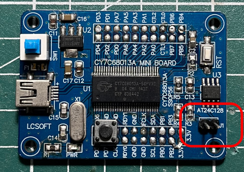

參考資訊：
https://www.triplespark.net/elec/periph/USB-FX2/eeprom/
https://www.triplespark.net/elec/periph/USB-FX2/software/
步驟如下：
1. 拔掉插銷後，連接USB到PC

$ sudo cycfx2prog prg:main.hex run
Using ID 04b4:8613 on 002.019.
Putting 8051 into reset.
Programming 8051 using "main.hex".
Putting 8051 out of reset.